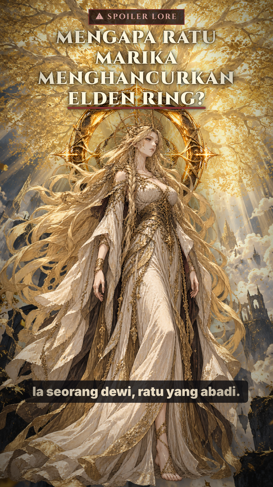
Marika di depan Erdtree dan cincin, judul, peringatan spoiler.
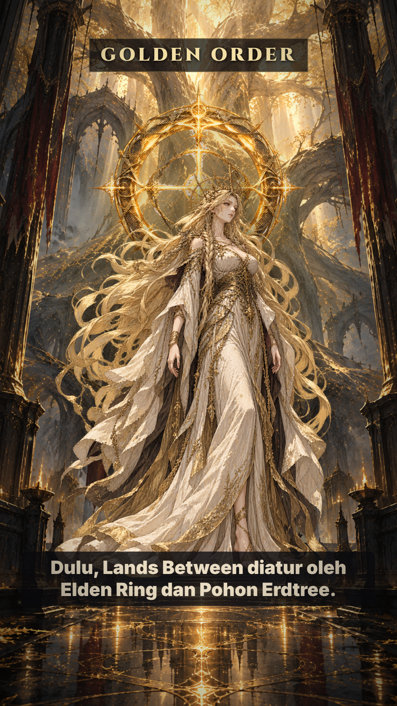
Aula emas, Marika di bawah cincin cahaya.
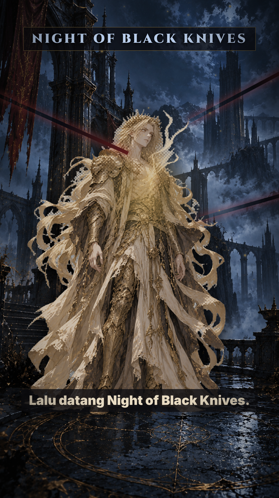
Godwyn di malam biru, jiwa emas naik, bayangan bilah.
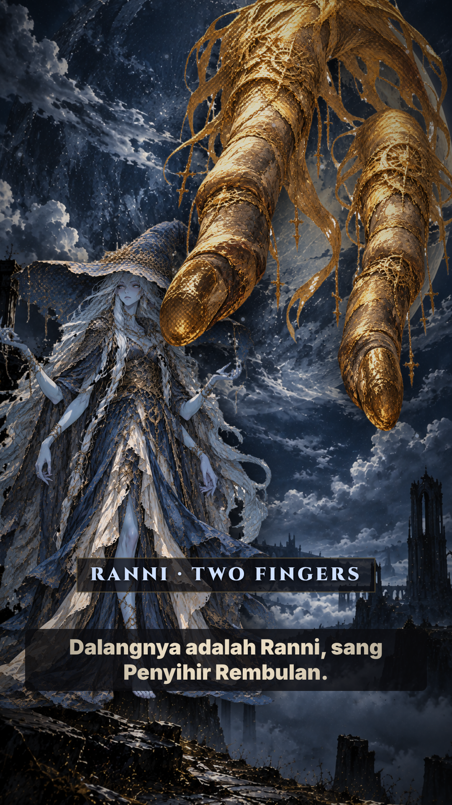
Ranni di depan bulan raksasa, Two Fingers dari atas.
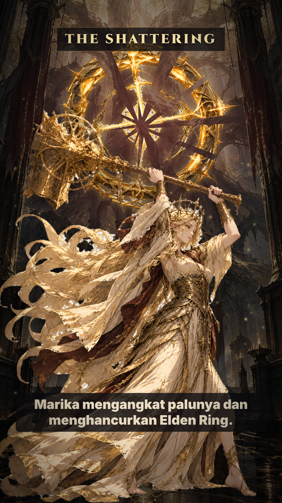
Marika mengangkat palu, Elden Ring pecah menjadi pecahan.
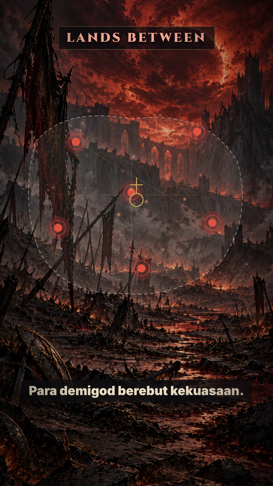
Peta Lands Between, api merah dari titik demigod.
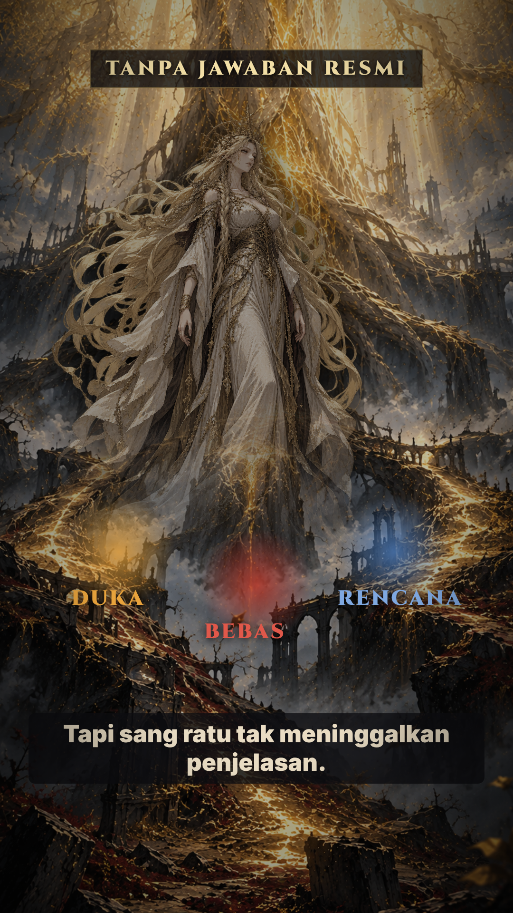
Marika setengah bayangan, akar terbelah tiga (duka, bebas, rencana).
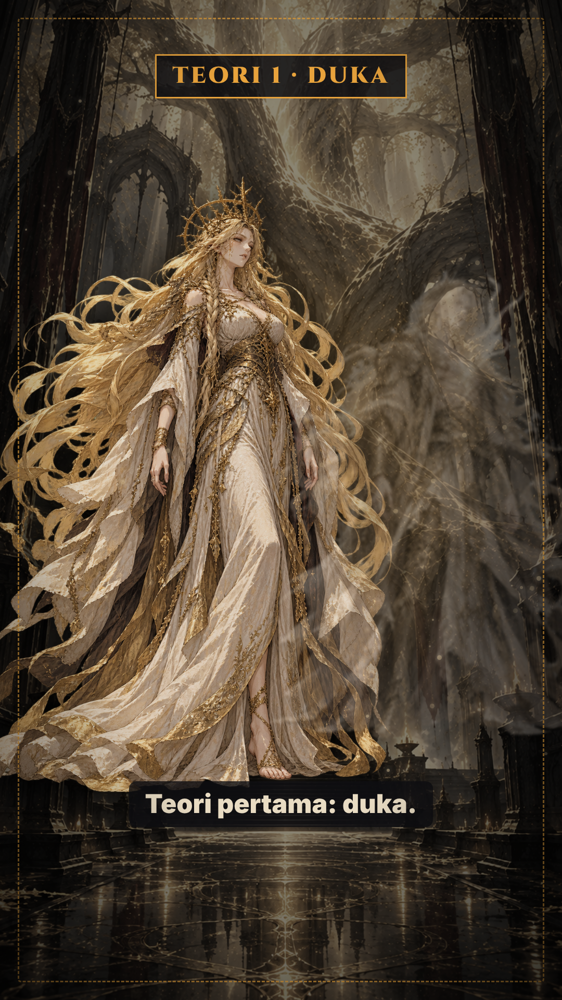
Marika dan bayangan Godwyn, bingkai putus-putus.
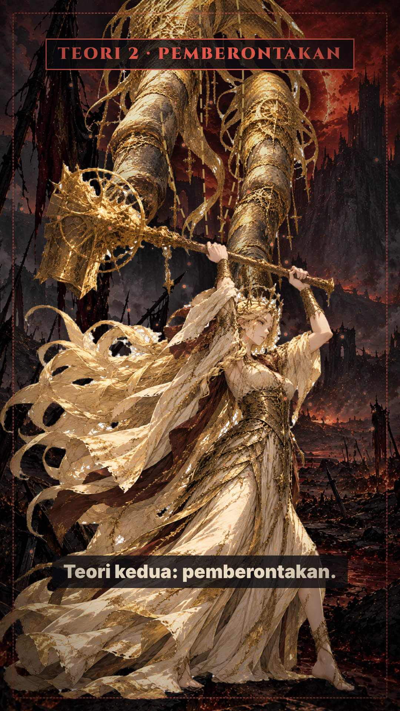
Rantai dari Two Fingers, palu terangkat.
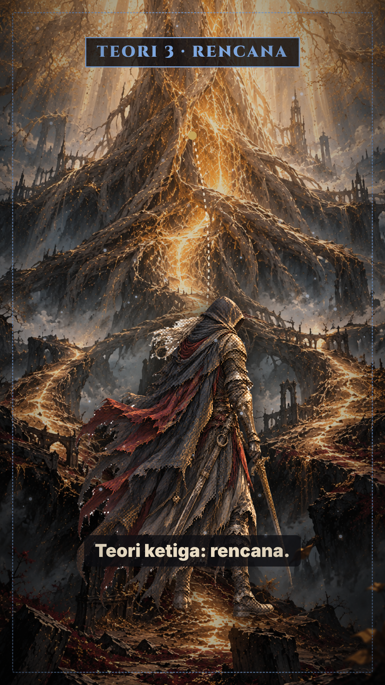
Tarnished dan garis rencana ke Erdtree.
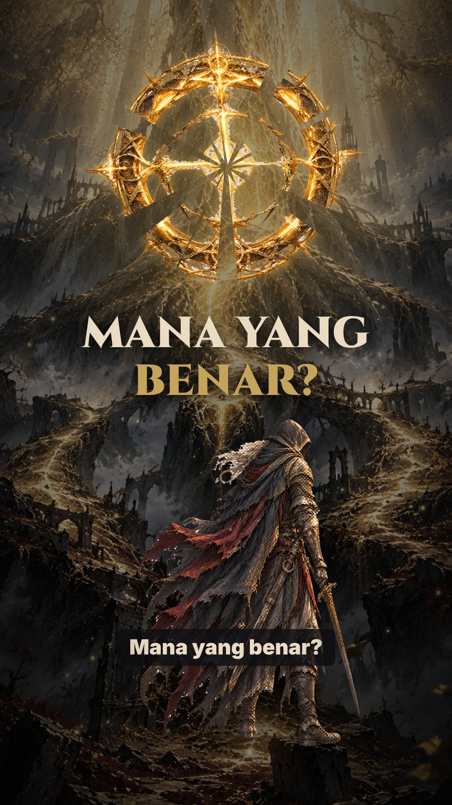
Cincin retak, Tarnished, 'Mana yang benar?'.